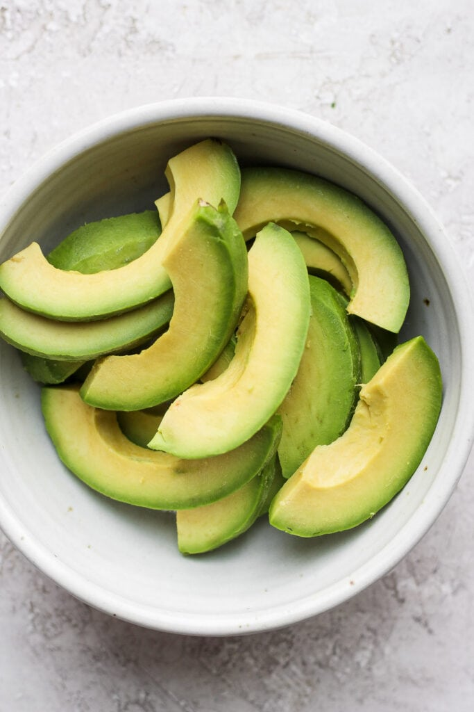
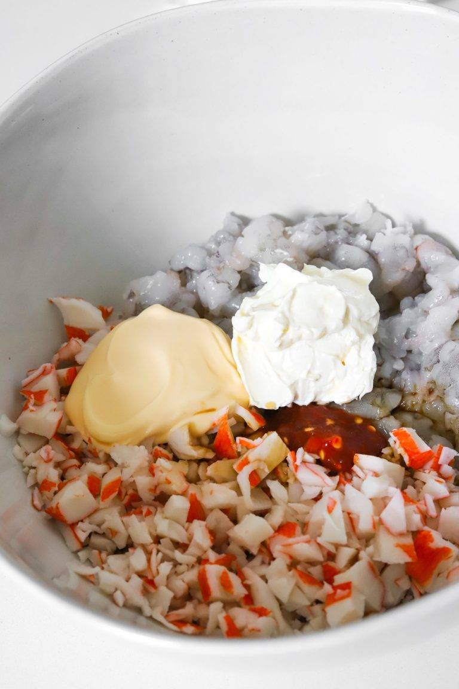
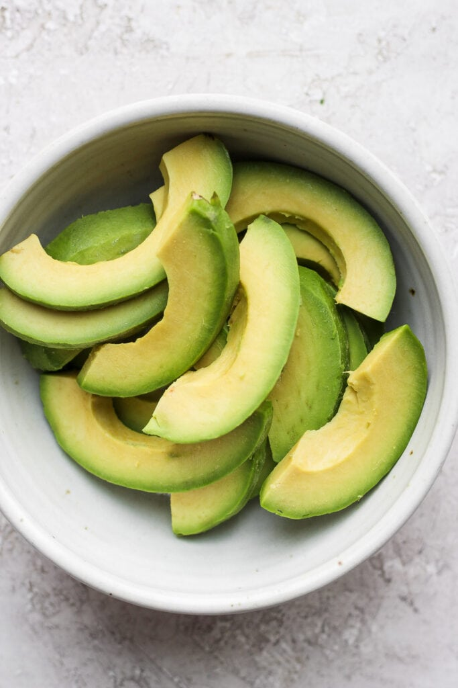
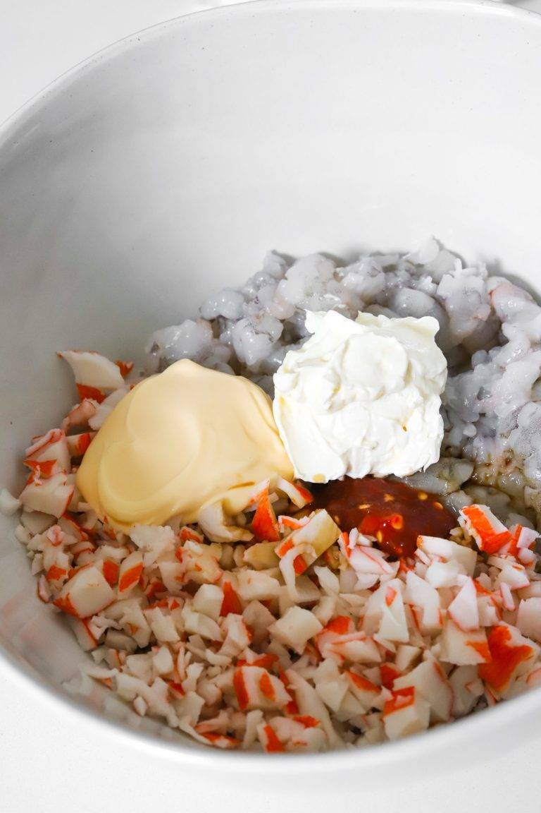
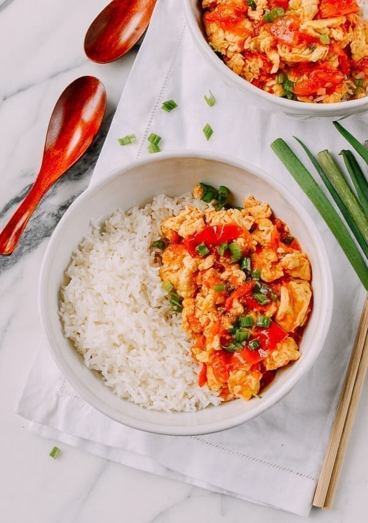
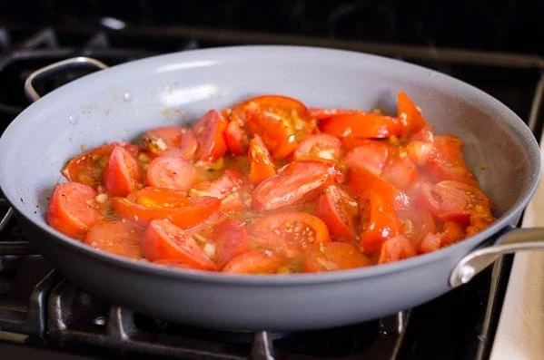

Sushi Bake
Origin: Asian Fusion Source: Own Recipe Category: Main Dish
Do you want easy, quick way to enjoy sushi without having to do all of the work? Try to make our sushi bake, which takes 10 minutes to assemble and 20 minutes to bake in the oven. Our recipe feeds 8 people.
Recipe Ingredients
- 1 avocado
- 1/2 cup soy sauce
- 2 cups rice
- 1 tablespoon rice vinegar
- 3 tablespoons mayonnaise
- 1/4 cup cream cheese
- 8 oz imitation crab
- 1 medium piece of salmon, chopped into small pieces
- 1 cucumber
- 3 tablespoons of sriracha
Recipe Steps
- Preheat oven to 350 degrees
- Make rice. Mix rice vinegar into rice after it is cooked
- Lay out all of the rice at the bottom of a large baking dish
- Mix the imitation crab, chopped salmon, 2 tablespoons of mayonnaise, cream cheese, and soy sauce together
- Put the crab and salmon mixture on top of the rice
- Bake for 20 minutes
- Slice the avocado and cucumber and lay those on the top of the dish
- Pour the rest of the mayonnaise and sriracha on top
- Enjoy!
Additional Food Images
 



Tomato and Egg
Origin: Chinese Source: Own Recipe Category: Main Dish
Tomato and eggs is a hot dish which originated from China. It is a simple and fast dish to make, but it has good nutritional value. It is a very satisfying food to eat and popularly served with rice and topped with green onions.
Recipe Ingredients
- Tomatoes
- Eggs
- Salt
- Sugar
- Cooking oil
Recipe Steps
- Crack eggs into a bowl and mix until scrambled
- Cut tomatoes into pieces around the size of your thumb
- Oil a hot pan and cook the eggs until satisfied, then remove the eggs
- Re-oil the pan and cook the tomatoes until they loosen
- Combine eggs and tomatoes and season with salt and sugar
Additional Food Images



Matcha Cookies
Origin: Japanese Source: Just One Cookbook Category: Dessert
These cookies have the perfect flavor balance of the earthiness from the matcha and the sweetness and creaminess from the white chocolate chips. They are crispy and sweet, perfect for an afternoon snack or dessert. Enjoy with a cup of tea!
Recipe Ingredients
- All-purpose flour
- Matcha powder
- Unsalted butter
- Kosher salt
- Confectioners' sugar
- Egg yolks
- White chocolate chips
Recipe Steps
- Combine flour and matcha powder in large bowl
- Sift the flour and matcha powder
- Beat softened butter until smooth and creamy
- Add salt and blend
- Add sugar and beat until soft and light
- Add egg yolks and mix until well combined
- Gradually add flour and matcha mixture and mix until well combined
- Add white hocolate chips and mix until incorporated
- Divide dough into two pieces. Shape each piece into cylinders about 1.5in in diameter
- Wrap logs in plastic wrap and chill in fridge for at least two hours
- Slice into ⅓ inch rounds and place on a baking tray lined with parchment paper
- Bake at 350 degrees for 15 minutes
Additional Food Images